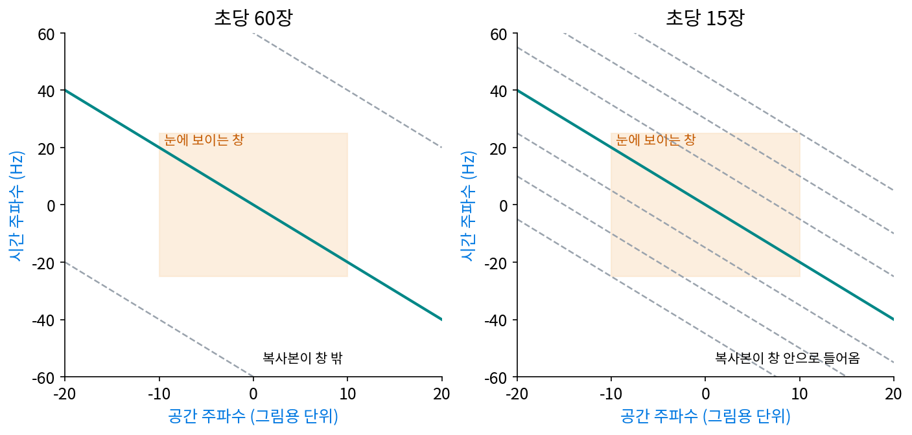
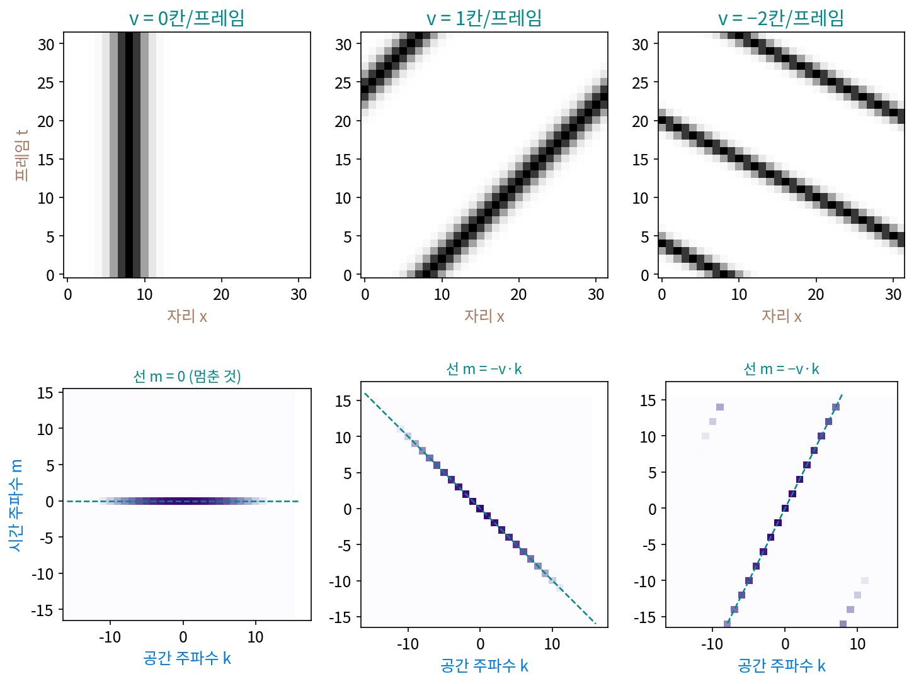

영상: 움직임은 시공간 스펙트럼에서 기운 평면
사진 한 장은 가로·세로 두 축 위의 밝기라서, 2차원 이산 푸리에 변환으로 가로 공간 주파수와 세로 공간 주파수마다의 세기를 읽었다. 영상은 이 사진이 1초에 수십 장씩 이어진 것이니, 가로·세로·시간 세 축 위의 밝기다. 같은 방법으로 세 축 모두에 물결을 대어 3차원 이산 푸리에 변환을 할 수 있다. 그렇게 얻은 스펙트럼에서 「움직임」은 어떻게 보일까? 오른쪽으로 걸어가는 사람과 가만히 선 사람은 스펙트럼에서 무엇이 다를까?
역사: 끊어 찍은 영상이 이어져 보이는 조건
영화와 텔레비전은 움직임을 1초에 24장, 30장 같은 정지 그림으로 끊어 보여 준다. 관객은 끊긴 것을 알아채지 못하지만, 바퀴가 거꾸로 도는 것처럼 보이는 착시처럼 가끔 들킨다. 몇 장이면 충분한지는 오랫동안 경험으로 정했다.
미국 항공우주국 에임스 연구 센터의 왓슨(Andrew B. Watson), 아우마다(Albert J. Ahumada Jr.), 패럴(Joyce E. Farrell)은 1983년 기술 보고서와 1986년 미국 광학회지 논문 「보이는 윈도우: 시간으로 끊어 보여 준 움직임의 충실도에 관한 정신물리 이론」에서 「1초에 몇 장이면 끊긴 것을 눈이 모르는가」를 스펙트럼으로 풀었다. 그들은 단순한 움직이는 그림의 시공간 주파수 스펙트럼을 구하고, 시간으로 끊어 보여 주면 그 스펙트럼이 시간 주파수 쪽으로 여러 벌 복사된다는 것을 보였다. 그리고 사람 눈이 볼 수 있는 공간 주파수와 시간 주파수의 범위를 「보이는 윈도우」로 두어, 복사본이 윈도우 밖에 머물면 끊어 보여 준 움직임과 이어진 움직임을 눈이 가르지 못한다고 예측했다. 그 예측은 그림이 움직이는 속도와 그림의 공간 주파수, 눈의 해상도가 함께 정한다. 그들은 이 예측 몇 가지를 실험으로 확인했다고 적었다. 1985년에는 아델슨(Edward H. Adelson)과 버건(James R. Bergen)이 움직임을 「시공간에서 기운 무늬」로 보고, 시공간에서 기운 방향에 맞춘 필터로 사람의 움직임 지각을 설명하는 모델을 같은 학회지에 냈다.

이 그림에서 움직이는 그림의 스펙트럼이 왜 하필 기운 선 위에 놓이는지는 그들이 먼저 구한 것이다. 우리도 장난감으로 직접 구해 보자.
점 하나가 오른쪽으로 움직이면
세로축을 빼고 가로 한 줄만 남기자. 칸 8개짜리 줄(양 끝이 이어져 오른쪽 끝을 넘으면 왼쪽 끝으로 돌아오는 고리) 위에 밝은 점 하나가 있고, 프레임마다 한 칸씩 오른쪽으로 간다. 프레임 8장을 아래에서 위로 쌓으면, 가로가 자리 x, 세로가 프레임 t인 8 × 8 그림이 된다. 점이 지나간 칸은 대각선 하나이니, 움직임이 2차원 그림 속의 기운 줄로 바뀌었다.
이 8 × 8 그림에 2차원 이산 푸리에 변환을 한다. 공간 주파수 k와 시간 주파수 m마다 계수를 구하면, 64칸 가운데 8칸만 크기가 8이고 나머지 56칸은 모두 0이다. 0이 아닌 칸은 (m, k) = (0, 0), (1, 7), (2, 6), (3, 5), (4, 4), (5, 3), (6, 2), (7, 1)로, 모두 m + k가 8의 배수다. 칸 번호 7은 고리 위에서 −1과 같으므로, 이 칸들은 선 m = −k 위에 있다.
까닭은 손으로 계산할 수 있다. 프레임 t의 점은 자리 t에 있으므로, 공간 주파수 k의 계수는 e−2πikt/8이다. 점이 한 칸 옮겨 갈 때마다 공간 물결 k의 계수는 각도 2πk/8만큼 돈다. 프레임마다 같은 각도씩 도는 화살표이니, 시간 쪽으로 다시 이산 푸리에 변환을 하면 시간 주파수 −k 한 칸에만 세기가 모인다. 공간 물결마다 시간 주파수가 하나씩 정해지고, (시간 주파수, 공간 주파수) 칸들이 한 줄로 늘어선 것이다.
점이 멈춰 있으면(v = 0) 0이 아닌 8칸은 모두 m = 0 줄에 있다. 프레임마다 두 칸씩 가면(v = 2) 0이 아닌 칸은 (0, 0), (0, 4), (2, 3), (2, 7), (4, 2), (4, 6), (6, 1), (6, 5)로, 모두 m + 2k가 8의 배수다. 선의 기울기가 점의 속도 v(프레임마다 옮기는 칸 수)다.

점 대신 폭이 있는 덩어리여도 같다. 칸 64개 × 프레임 64장에서 폭 2칸짜리 덩어리가 프레임마다 한 칸씩 움직이면, 4096칸 가운데 선 위의 64칸이 세기의 100%를 담는다. 덩어리의 모양은 선 위에서 세기가 어떻게 줄어드는지만 정하고, 세기가 어느 선 위에 놓이는지는 움직이는 속도가 정한다.
가로·세로·시간 세 축이면 선이 평면이 된다. 그림 g가 모양을 그대로 둔 채 프레임마다 (vₓ, vᵧ)칸씩 움직이면, 영상의 3차원 스펙트럼은 아래 평면 위에만 세기를 가진다.
32 × 32칸, 32장짜리 영상에서 덩어리가 프레임마다 (1, 2)칸씩 움직이면, 32768칸 가운데 평면 m + kₓ + 2kᵧ ≡ 0 (32로 나눈 나머지) 위의 1024칸이 세기의 100%를 담는다. 멈춘 그림은 m = 0 평면에 눕고, 움직이는 그림은 속도만큼 기운 평면에 놓인다. 이렇게 가로·세로·시간에 걸친 스펙트럼을 시공간 스펙트럼 (가로·세로·시간 세 축의 주파수 / spatiotemporal spectrum)이라 한다. 「움직임」이라는 말 대신 「스펙트럼 평면의 기울기」라는 숫자 둘로 가로·세로 속도를 읽을 수 있다.
ML에서: 영상 생성 모델의 시간 축
영상 생성 모델은 프레임을 그대로 다루지 않고, 압축기(오토인코더)로 줄인 잠재 위에서 노이즈를 걷어 낸다. ComfyUI 의 코드(comfy/latent_formats.py, comfy/ldm/wan/vae.py)를 보면 Wan 2.1 의 압축기는 가로·세로에 더해 시간 쪽으로도 네 배를 줄여, 프레임 81장(4 × 20 + 1)을 잠재 21장으로 만든다. 시간 쪽으로 네 배 줄인다는 것은 시간 주파수의 위쪽 끝을 네 배 낮추는 일과 닮았다. 시공간 스펙트럼에서 움직이는 물체의 세기는 기운 평면 위에 있으므로, 빠르게 움직이는 물체일수록, 무늬가 가늘수록 높은 시간 주파수로 올라간다. 줄인 잠재가 어떤 움직임까지 담을 수 있는지는 아래 문제 6에서 셈해 본다.
문제 4. 기차 창밖의 전봇대와 산
초속 20 m 로 달리는 기차에서 창밖을 정면으로 찍는다. 카메라는 각도 1° 를 20칸에 담고 1초에 30장을 찍는다. 선로에서 10 m 떨어진 전봇대와 2 km 떨어진 산이 화면 가운데를 지날 때, (가) 각각 프레임마다 몇 칸씩 움직이는가? (나) 둘의 자리–시간 그림과 시공간 스펙트럼은 어떻게 다른가? (다) 선로를 따라 40 m 마다 선 전봇대, 2 m 마다 선 방음벽 기둥, 1 m 마다 선 난간 살은 영상에서 어느 쪽으로 가는 것처럼 보이겠는가?

(가)는 기차가 초속 20 m 니까 둘 다 같은 속도 아니에요? 산이 멀어서 작게 보일 뿐이죠.

기차 창밖을 볼 때 가까운 전봇대와 먼 산이 같은 속도로 지나가던가요?

아, 산은 거의 안 움직여요. 화면 안에서는 각도가 바뀌는 속도(각속도)가 중요하네요. 정면을 지날 때 각속도는 20 m/s ÷ 거리라서, 전봇대는 2 rad/s = 114.59°/s, 산은 0.01 rad/s = 0.57°/s 예요. 칸으로 바꾸면 전봇대는 1초에 2291.8칸, 프레임마다 76.39칸이고, 산은 프레임마다 0.38칸이에요.

(나)는 산은 자리–시간 그림에서 거의 세로로 선 줄이니까 스펙트럼에서도 거의 누운 평면이야. 전봇대는 프레임 한 장에 76칸씩 가니 거의 가로로 누운 줄이고, 스펙트럼 평면은 아주 가파르게 기울어. 시간 주파수가 공간 주파수의 76배씩 커지니까 금방 한 장에 반 바퀴를 넘겠다.

반 바퀴를 넘으면 무슨 일이 생기죠?

에일리어싱이에요. 시간 쪽으로 너무 성기게 잰 거니까 빠른 물결이 느린 물결로 둔갑해요. (다)는 한 장 사이에 기차가 20 ÷ 30 = 0.667 m 가니까, 줄지어 선 기둥의 무늬도 한 장에 0.667 m 씩 밀려요. 전봇대 40 m 간격이면 한 장에 주기의 0.017 배, 방음벽 2 m 간격이면 0.333 배라 둘 다 바로 가는 것처럼 보여요. 난간 살 1 m 간격이면 0.667 배라 절반을 넘으니까, 앞으로 0.667 m 간 것과 뒤로 0.333 m 간 것이 똑같은 그림이 돼요. 난간은 거꾸로 가는 것처럼 보이겠어요.

고속도로에서 휴대폰으로 다리 난간을 찍으면 무늬가 뒤로 흐르던 게 그거였어요. 촘촘한 것일수록 그래요.
문제 5. 오른쪽으로 가는데 왼쪽으로 가는 줄무늬
칸 16개 고리 위에 주기 4칸짜리 줄무늬(칸 번호 k = 4)가 있고, 프레임마다 3칸씩 오른쪽으로 움직인다. (가) 시공간 스펙트럼에서 0 이 아닌 칸 (m, k) 를 구하라. (나) 이 영상을 본 사람은 줄무늬가 어느 쪽으로 몇 칸씩 간다고 느끼겠는가? (다) 줄무늬 주기를 8칸으로 바꾸면 어떻게 되는가? (위젯 2의 「문제 5 불러오기」로 확인해 보자.)
(가)는 선 m = −v·k 에 넣으면 m = −12 고, 16으로 나눈 나머지는 4예요. 0이 아닌 칸은 (4, 4)와 그 켤레 (12, 12)요. (나)는 3칸씩 오른쪽으로 가니까 오른쪽이죠.
프레임 0, 1, 2, 3 의 무늬를 직접 그려 봐요. 밝은 칸이 어디죠?

프레임 0 은 칸 0, 4, 8, 12, 프레임 1 은 칸 3, 7, 11, 15, 프레임 2 는 칸 2, 6, 10, 14… 어, 밝은 칸 하나하나를 보면 0 → 3 이 아니라 0 → 15 → 14 처럼 한 칸씩 왼쪽으로 가는 것처럼 보여요.
주기가 4칸이니까 3칸 오른쪽은 1칸 왼쪽과 무늬가 같아. 시공간 스펙트럼에서도 m = 4 는 v·4 ≡ 12 (16으로 나눈 나머지)를 만드는 v = −5, −1, 3, 7 모두와 같은 칸이야. 그중 사람 눈은 가장 작게 움직인 −1 을 고르겠지.

그래요. 자리–시간 그림을 시간 쪽으로 너무 성기게 재면, 기운 선의 끝이 고리를 넘어 반대쪽에서 나타나요. 영화에서 바퀴가 거꾸로 도는 착시도 이 시간 쪽 에일리어싱이죠. (다)는요?

주기 8칸이면 k = 2, m = −6 이고 16으로 나눈 나머지 10 이라 (10, 2)와 (6, 14)예요. 3칸은 주기 8칸의 절반보다 작으니까 −5 칸으로 둔갑하지 않고 3칸 오른쪽으로 보여요. 한 프레임에 무늬 주기의 절반보다 덜 움직여야 바로 보이는 거네요. 샘플링 정리를 시간 쪽에 쓴 거예요.

그래서 엘리베이터 문 틈으로 본 에스컬레이터 계단이 가끔 거꾸로 가는 것처럼 보였구나.
문제 6. 시간을 네 배로 줄인 잠재
영상 압축기가 시간 쪽으로 네 장마다 한 장만 남긴다고 단순하게 생각하자(실제 압축기는 배운 신경망이라 더 영리하다). 원래 프레임으로 셀 때 남은 잠재가 담을 수 있는 시간 주파수는 한 프레임에 0.125 바퀴까지다. (가) 줄무늬 주기 8칸이 프레임마다 2칸씩 움직이면 원래 프레임 단위로 시간 주파수가 얼마이고, 잠재가 담을 수 있는가? (나) 줄무늬 주기 32칸이 2칸씩, 주기 8칸이 0.5칸씩, 주기 32칸이 4칸씩 움직이면? (다) 압축기의 짝인 되살리는 신경망(디코더)은 무엇을 해야 하는가?
(가)는 속도 ÷ 주기 = 2/8 = 0.25 바퀴/프레임이라 0.125 를 넘어요. 못 담아요. (나)는 2/32 = 0.0625 로 담고, 0.5/8 = 0.0625 로 담고, 4/32 = 0.125 는 딱 경계라 못 담아요.
같은 0.0625 가 두 번 나왔네요. 서로 다른 두 영상인데 왜 같을까요?
시공간 스펙트럼에서 움직이는 줄무늬의 시간 주파수는 v × (공간 주파수)라서, 굵은 무늬가 빨리 가는 것과 가는 무늬가 천천히 가는 게 같은 시간 주파수를 만들어. 기운 평면 위에서 같은 높이에 있는 거야.
그러면 (다)는요? 잠재 21장만 받은 되살리는 신경망이 81장을 내놓아야 해요.
담지 못한 높은 시간 주파수는 잠재에 없으니까, 되살리는 신경망이 「이 무늬는 이 속도로 가고 있었다」를 그림의 공간 정보에서 짐작해 채워야 해요. 평면의 기울기인 속도 v 를 알면 공간 주파수에서 시간 주파수를 계산할 수 있으니 그게 가능은 하고요.

발표 동영상을 1초에 4장으로 줄여 보내면 손짓은 대충 보여도 빨리 넘긴 슬라이드 글씨는 못 읽어요. 손짓은 굵고 느린 무늬, 글씨는 가늘고 빨리 지나가는 무늬라서 글씨가 제일 먼저 사라져요.